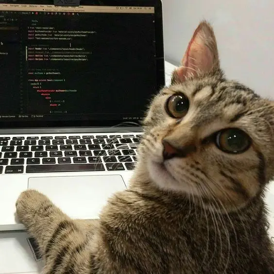

Фритрек и нулевой спринт: Подготовка к работе

</предвкушение>Это было самое начало пути. На этом этапе важно было проникнуться основами и настроиться на учёбу. И, возможно, подумать, как новые знания могут повлиять на ваше будущее.
С нетерпением ждала начала обучения. Мне давно хотелось погрузиться в эту сферу, и наконец появилась возможность сделать первый шаг.